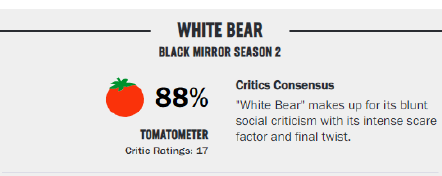
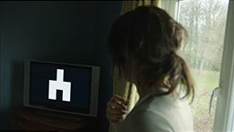
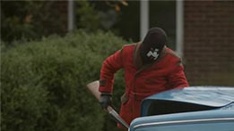

Relevamiento
Datos del Episodio
Número de Episodio: 2 Temporada: 2
Título Original: White Bear Título Español: Oso Blanco
Elenco: Lenora Crichlow (Victoria Skillane), Michael Smiley (Baxter), Tuppence Middleton (Jem), Ian Bonar (Damien), Elisabeth Hopper (mujer del cuchillo), Nick Ofield (Iain Rannoch), Imani Jackman (Jemima Sykes), Russel Barnett (reportero).
Banda Sonora:Jon Opstad
Director:Carl tibbets
Escritor:Charlie Brooker
Personajes Principales
Victoria Skillane:es el personaje principal y antagonista de este episodio. Es presentada como un personaje confundido y temeroso que busca conocer su pasado.
Baxter:se presenta como una de las personas que no es afectada por la señal que hace que graben a los demás, él ayuda a Victoria y a Jem al inicio pero luego las traiciona.
Jem:Jem es una de las supervivientes que ayuda a Victoria a huir, interpretada por la actriz Tuppence Middleton, Jem es de las primeras personas con las que se encuentra Victoria mientras huía.
Datos de Prensa
El episodio recibió diversos reconocimientos, siendo publicado en el suplemento Cinemanía del diario "El Mundo" el cuarto puesto de mejores episodios, por otro lado, El País le otorga la posición 15 de 19 y en Rotten Tomatoes recibe un 88% por su desafiante crítica social con un intenso factor de terror y el giro inesperado del final del episodio.

Escenas
 